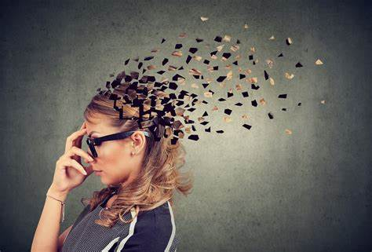

SIDE EFFECTS OF UNHEALTHY FOOD AND ROUTINE
Grabbing a quick snack on your way to work is the new breakfast trend. Also, healthy home-made meals are replaced by easily available foods from your favourite fast-food joints. Kids these days prefer these foods and tend to fulfil their nutrition requirement. While it may be only satisfying for the tongue, there is very negligible nutrition value in these junk foods.
With our busy lives, we often resort to eating junk foods, but regular consumption can harm the body to the point of some irreparable damages. More evidently termed as fattening foods, but apart from those few inches on your waist, there are some serious effects of junk food.
Junk foods, by definition, are high in calories, salt, sugar, and fat and have little nutritious value. You may believe that having a junk food day is detrimental to everyone’s health. However, if you consume a healthy and balanced diet, there is nothing wrong with enjoying one day a year when you may eat everything you want. National Junk Food Day is a day when you can eat unhealthy foods that you normally would not.
Most people agree that driving drunk, smoking cigarettes, and sword swallowing are inherently risky activities. What's surprising is that sometimes doing nothing at all—not moving a muscle—can be just as life-threatening. Not exercising, or even not getting physical activity, is a confirmed risk factor of premature death. In fact, inactivity and being sedentary causes more deaths around the world than cigarette smoking or diabetes, according to a study published in The Lancet. Researchers found that people who were the least fit (as determined by a treadmill test) were at a 500% increased risk of dying early.
As we talk and vouch for the benefits of regular exercise, it often gets missed out that engaging in little to no exercise can be just as bad, or even life-threatening. Take this for example. While regular, brisk exercise is said to delay ageing, not meeting required levels of physical activity can actually accelerate your risk of prematurely dying, and causes more deaths globally than tobacco consumption or diabetes, as per a study published in The Lancet. Now, while skipping a day or two of exercise (or a week) wouldn’t do much harm to your body, there’s actually a lot of graver risks which entail if you go without budging an inch, or moving your arms for upwards of a month. We tell you 5 such things which can happen if you do not exercise regularly or remain physically active:
Some of the effects
1) Obesity
One of the most common and perceivable effects of junk food is a rise in obesity in an individual. Junk foods are loaded with sugars, calories and fats that are a prime factor resulting in weight gain. Further, obesity is the starting point for issues that originate like diabetes, joint pain, and various heart ailments.
2) Learning and Memory Problems
High intake of sugars and fats tend to suppress the function of the brain that helps in learning and memory formation. This phenomenon is especially observed in growing children when their learning is at its highest. It was further supported by a study published in the American Journal of Clinical Nutrition, where it observed junk food consumption led to poor cognitive test results. Results displayed in a sudden inflammation in the hippocampus region of the brain, which is responsible for your memory and recognition.
3)Hard Night's Sleep
Not getting enough sleep or tossing and turning at night may not seems like something to worry about. But if it happens regularly, it can usher in a host of health problems—from weight gain and diabetes, heart disease to poor immunity to mood disorders and even accidents. So, poor sleep due to lack of physical activity can be life-threatening. Now, consider the flip side: Have you ever fallen into the deepest, most satisfying and rejuvenating of sleeps after spending three hours in the fresh air working in the yard, paddling a kayak, backpacking 10 miles, or running a long-distance race? Vigorous exercise, especially when done outdoors, is a highly effective drug-free sleep inducer—one that you're missing if you aren't getting regular exercise. A meta-analysis of research exploring the interrelationship between sleep and exercise in the journal Advances in Preventive Medicine identified 29 studies showing that exercise improved both sleep duration and sleep quality.
4)High Blood Pressure
Exercise helps your heart pump more efficiently. If your heart is fit, it has to work less hard to pump blood, and the force through your arteries decreases. If you don't exercise, over time your cardio-respiratory fitness (CRF) decreases. Many studies have demonstrated this: In one South Korean study published in the American Journal of Human Biology, 3,831 men without heart disease or hypertension were given two health examinations about 10 years apart. The researchers found that subjects whose fitness levels decreased over that time period had a 72% increase risk in developing high blood pressure compared to subjects who increased their cardio-respiratory fitness. So count not exercising as one of the 14 Mistakes That Are Making Your High Blood Pressure Worse.
5) Develop Heart Disease
Even when you have none of the classic risk factors for heart disease—like high blood pressure, high cholesterol, and obesity—inactivity can still lead to heart disease, a condition that affects up to 6 million Americans. Johns Hopkins Medicine researchers analyzed reported exercise levels in more than 11,000 people participating in the Atherosclerosis Risk in Communities study and found that going without physical activity in middle age for six years was linked with an increased risk for heart failure. The 2,530 participants who reported decreased physical activity increased their heart failure risk by 18% even though they had no history of cardiovascular disease at the start of the study, the report in Circulation showed.
6) Memory Loss
Scientists believe that exercise promotes neuroplasticity, the brain's ability to form new neural connections and adapt throughout life. Studies have demonstrated that one of the areas of such growth is in the hippocampus, which governs memory and executive functions. One study presented in the journal Neurology found that people who were fit as young adults had a better memory, motor skills, and a greater ability to focus and control emotions 25 years later when they were in middle-age.
7)You'll destroy your Endurance
Top-level kayakers are a pretty fit bunch, wouldn't you say? So, consider this experiment that measured their VO2 max after taking a five-week break from their training. VO2 max is a measure of the maximum amount of oxygen a person can use during a bout of intense exercise, and it's considered the gold standard test for determining an athlete's cardiovascular fitness. The Journal of Sports Science & Medicine study found that the athletes' VO2 max dropped an average of 11.3% during the five-week hiatus from kayak training. That's significant. Now consider how bad your VO2 max might be if you, a mere mortal not an elite kayaker, didn't do any exercise at all for a long period of time.
